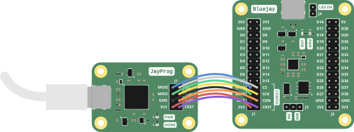
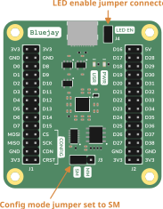
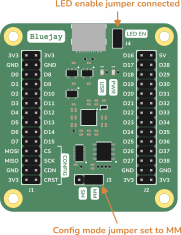

Programming the Board
Overview
With your bitstream generated, it's time to load the design onto the FPGA. This page covers how to connect the JayProg to the Bluejay and load your bitstream.
Understanding the Configuration Interface
Bitstreams are loaded onto the iCE40 using a SPI interface (CS, SCK, MOSI, MISO) and two dedicated configuration signals:
CRST(an abbreviation forCRESET_B) - Configuration resetCDN(an abbreviation forCDONE) - Configuration done
The Bluejay's CONFIG interface (located at the bottom of header J1) provides access to these signals, along with power and ground.
Connecting the JayProg
The JayProg exposes the same signals as the Bluejay's CONFIG interface, so the two boards connect directly pin-for-pin.

Programming the FPGA (Volatile)
This method loads the bitstream directly into the FPGA's SRAM. The configuration is lost when power is removed.
Board Setup
Configure the board as follows:
- Set the configuration mode jumper to SM (Slave Mode)
- Connect the LED EN jumper to enable the LEDs
- Disconnect USB and 5V power — the JayProg will supply 3.3V through the 3V3 and GND pins

Programming Command
Once the JayProg is connected, run:
sudo iceprog -d i:0x0403:0x6010 -S gen/top.bin
If successful, the USR LED should start blinking at 1 Hz!
Using the Makefile
If you created the Makefile in the previous step, you can program the FPGA with:
make prog
Programming the Flash (Optional)
To make your design persistent across power cycles, you can program the onboard flash chip. The FPGA will then automatically configure itself from flash on each power-up.
Board Setup
Configure the board as follows:
- Set the configuration mode jumper to MM (Master Mode)
- Connect the LED EN jumper to enable the LEDs
- Disconnect USB and 5V power — the JayProg will supply 3.3V through the 3V3 and GND pins

Programming Command
Run:
sudo iceprog -p -d i:0x0403:0x6010 gen/top.bin
After programming completes, the FPGA will enter Master Mode and load the bitstream from flash. The USR LED should start blinking immediately.
You can now disconnect the JayProg. The design will automatically load whenever the board is powered on.
Using the Makefile
If using the Makefile:
make flash
Congratulations!
You've successfully created and programmed your first FPGA design on the Bluejay!